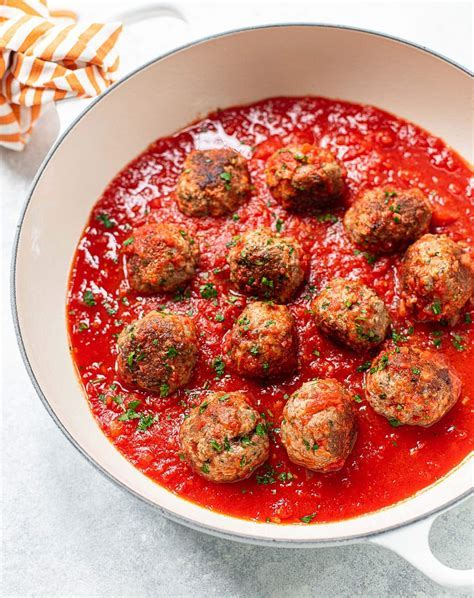

<section class="content">
  <h2>Classic Meatballs</h2>
  
  <h3>Ingredients</h3>
  <ul>
    <li>1 lb ground beef</li>
    <li>1/2 cup breadcrumbs</li>
    <li>1 egg</li>
    <li>1/4 cup parsley</li>
    <li>Salt and pepper to taste</li>
  </ul>
  <h3>Instructions</h3>
  <ol>
    <li>Mix all ingredients in a bowl.</li>
    <li>Form into meatballs.</li>
    <li>Bake at 375°F for 20 minutes.</li>
  </ol>
</section>
